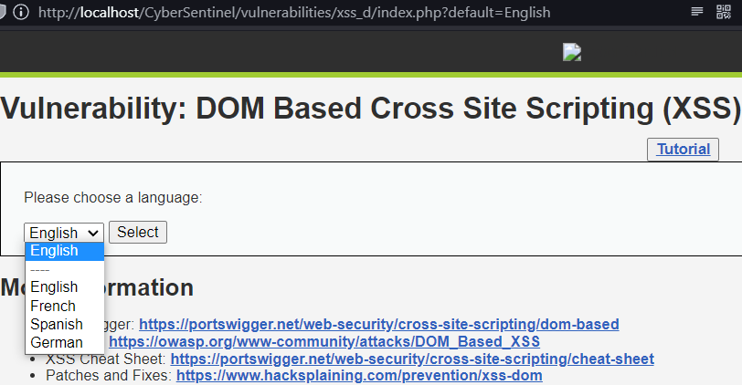
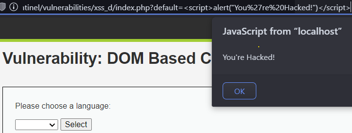
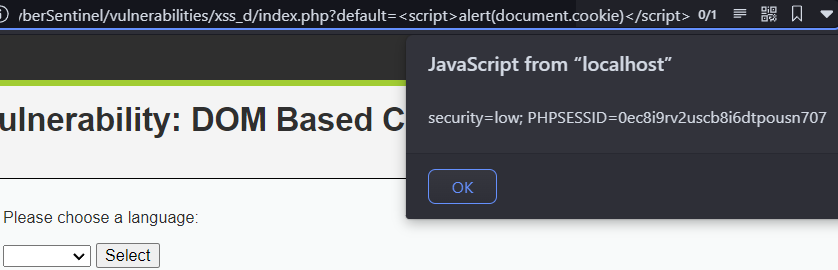

This is a replica of a drop-down menu, which takes the selected options into a JavaScript funcntion. Similar
to Command Injection, if the input isn't validated, you're toast👀

The expected input is an option present in the drop-down menu. You can observe that once you submit an
option, the url is being updated. If a malicious script is given as an option in the url, it will be
executed through JavaScript.

If your website is giving an alert by manipulating the url, the bad actor will know that it is vulnerable to
XSS.
This vulnerability can be exploited in much more harmful ways, you can obtain the cookie of a logged in
user, and use it for Session Hijacking, where you can gain unauthorized access to a user's
account.
